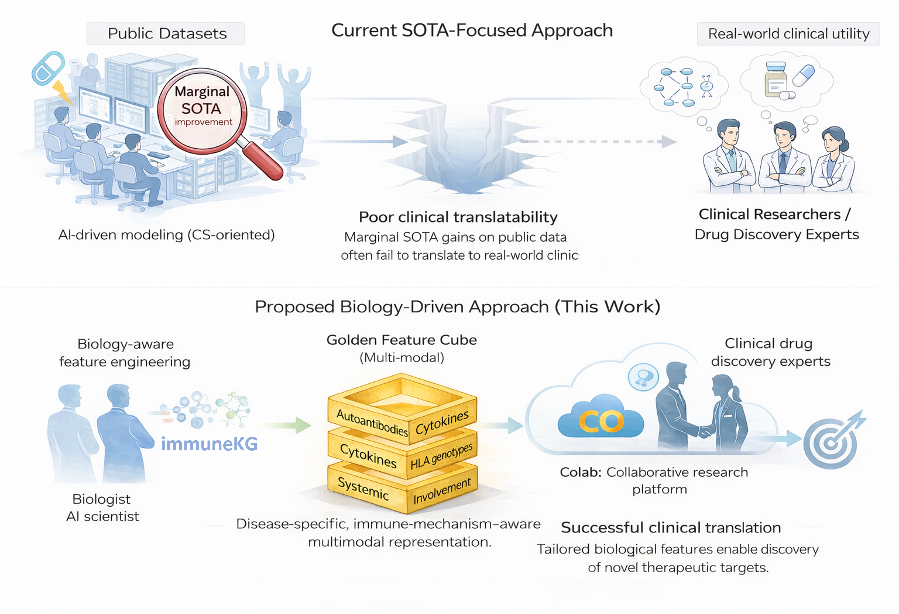

immuneKG
Knowledge Graph Framework for Immune Disease Target Discovery
Targeting the immune landscape — from knowledge graph to clinical candidate
Knowledge Graph Framework for Immune Disease Target Discovery
Targeting the immune landscape — from knowledge graph to clinical candidate
Existing biomedical knowledge graphs treat the immune system as a black box — they capture disease, gene, and drug nodes, but collapse the rich diversity of immune cell biology into nothing. Yet in immune-mediated inflammatory diseases (IMIDs), which cell type mediates pathology matters enormously: a drug that depletes Th17 cells has a fundamentally different therapeutic profile from one that expands Tregs, even if both downstream targets appear identical in a flat graph.
immuneKG resolves this gap by explicitly modelling immune cell subtypes as first-class graph entities and introducing four curated relation types that wire them into the broader KG. These new nodes and edges serve two complementary roles: they enrich the graph topology that the GNN traverses during target scoring, and they provide an interpretability layer — allowing post-hoc analysis of which immune cell subtypes are structurally proximal to high-ranking candidates in the embedding space.

immune_cellMost KG frameworks model three node types. immuneKG adds a fourth:
disease · gene/protein · drug ·
immune_cell← new
28 immune cell subtypes — individually curated and validated — are embedded as distinct graph nodes, capturing the full innate-to-adaptive axis that governs autoimmune pathology.
| 🛡️ Innate Immunity | 🎯 Adaptive Immunity | ||||||||||||||||||||||||
|---|---|---|---|---|---|---|---|---|---|---|---|---|---|---|---|---|---|---|---|---|---|---|---|---|---|
|
|
Four original relation types absent from all existing KG schemas wire immune cell nodes into the broader graph:
| Code | Full Relation Name | Direction | Source |
|---|---|---|---|
IcE |
immunecell_expresses_marker_gene |
immune_cell → gene/protein |
CellMarker 2.0 |
IcIm |
immunecell_implicated_in_disease |
immune_cell → disease |
Manual curation |
IcDv |
gene_drives_immunecell_differentiation |
gene/protein → immune_cell |
DICE eQTL |
DrIc |
drug_modulates_immunecell |
drug → immune_cell |
Manual curation |
These relations serve two purposes in immuneKG:
Graph topology enrichment. The IcE and IcDv edges (≥2,900 and ≥6,100 triples respectively) create dense bridges between immune cell nodes and the gene/protein layer. The HeteroPNA-Attn GNN propagates information across these edges during training, allowing disease–gene–drug scoring to be implicitly conditioned on immune cell context.
Interpretability. After target scoring, embedding-space proximity between high-ranking candidates and specific immune cell nodes can be examined via the similarity mode, revealing which immune cell subtypes are structurally linked to top-ranked targets — without requiring the immune cell relations to perform reliably as standalone link predictors.
Note on link prediction with immune_cell relations. The
IcIm(7 training triples) andDrIc(22 training triples) relations have insufficient training density to support meaningful link prediction.IcEandIcDvhave adequate triple counts but theIcDvtraining signal is dominated by population-level cis-eQTLs from DICE, which reflect genetic co-regulation rather than causal differentiation drivers. For these reasons, link prediction queries using the four immune_cell relations are not recommended as a primary use case of immuneKG in its current form. The relations contribute to the KG's structural richness and are reserved for interpretability analysis.
Each disease node is augmented with five external feature dimensions fused into the KG embedding space:
| # | Dimension | Source file | Signal captured |
|---|---|---|---|
| 1 | GWAS genetic | gwas_genetic_features.csv |
SNP-level genetic associations |
| 2 | HPO organ | hpo_organ_features.csv |
Organ-system involvement patterns |
| 3 | HPO phenotype | hpo_phenotype_stats.csv |
Phenotype co-occurrence statistics |
| 4 | IEDB antigen | iedb_onehot_features.csv |
Antigen identity encoding |
| 5 | IEDB epitope | iedb_statistical_features.csv |
Epitope statistical features |
A dual-branch graph neural network combining PNA multi-aggregation (mean / max / min / std with degree-scaling amplification) on a homogeneous projection graph with HGT heterogeneous attention on the full typed graph — preserving the semantic distinctions between disease, gene, drug, and immune_cell nodes throughout message passing.
Score_final = Score_combined / log(2 + Degree(target))
Well-studied, highly-connected targets are down-ranked; long-tail candidates with genuine biological signal — including immune_cell-proximal targets that lack classical disease–gene links — rise in the ranking.
python --version # 3.8+
nvidia-smi # GPU strongly recommended
pip install -r requirements.txt
# GNN support — match your PyTorch/CUDA version
pip install torch-geometric
# [https://pytorch-geometric.readthedocs.io/en/latest/install/installation.html](https://pytorch-geometric.readthedocs.io/en/latest/install/installation.html)
data/gwas_genetic_features.csv
data/hpo_organ_features.csv
data/hpo_phenotype_stats.csv
data/iedb_onehot_features.csv
data/iedb_statistical_features.csv
python train.py
Results appear in results/.
python train.py # default config
python train.py --config configs/custom.yaml
python train.py --force-retrain # ignore checkpoints
# Lightweight modes
python train.py --no-gnn # ComplEx + FFN only
python train.py --no-novelty # skip novelty penalty
python train.py --no-gnn --no-novelty # fastest baseline
All modes load trained artefacts from results/ automatically.
The primary use case. Scores all gene/protein targets against one or more disease keywords using the full ComplEx + fusion + GNN pipeline.
# Rank all gene/protein targets against given disease keyword(s)
python predict.py --mode target_scoring \
--keywords "colitis" "crohn disease" \
--top-k 50
# Restrict to specific relation types
python predict.py --mode target_scoring \
--keywords "ulcerative colitis" \
--relations P U D --top-k 50
Inspect embedding-space neighbours of any entity, including immune cell nodes.
# Find entities most similar to IL-6 in embedding space
python predict.py --mode similarity --entity "il6" --top-k 20
# Find gene/protein nodes most similar to Th17 cell
python predict.py --mode similarity \
--entity "th17 cell" --filter-type "gene/protein" --top-k 20
python predict.py --list-relations # full relation table with triple counts
python predict.py --list-entities --entity-type disease
python predict.py --list-entities --entity-type immune_cell
python predict.py --list-entities --entity-type gene/protein
The explain_immunecell.py script quantifies and visualises the structural contribution of immune cell nodes to target scoring predictions.
It is the recommended entry point for using the immune_cell layer of immuneKG.
Two complementary bridging paths are computed for every immune cell:
Path A (IcDv bridge):
Top-ranked Gene ──IcDv──> ImmuneCell
A high-scoring gene also drives differentiation of this cell type.
icdv_score = Σ prediction_score(gene) for genes linked via IcDv
Path B (IcE bridge):
ImmuneCell ──IcE──> Top-ranked Gene
A high-scoring gene is a defining marker of this cell type.
ice_score = Σ prediction_score(gene) for genes linked via IcE
These are post-hoc structural explanations — they reveal which immune cell subtypes are topologically wired to the predicted target set in the KG, without relying on the immune cell relations to perform link prediction.
A third signal — embedding-space proximity — measures cosine similarity between each immune cell's embedding and the centroid of top-ranked gene embeddings, capturing implicit signal learned by the GNN and ComplEx model.
# Analyse immune cell contributions for IBD (using pre-computed scores)
python explain_immunecell.py \
--disease "inflammatory bowel diseases" "colitis" \
--results results/targets_inflammatory_bowel_full.csv \
--top-k 50 \
--output results/immunecell_interpretability/
# Rheumatoid arthritis — let the script score on the fly
python explain_immunecell.py \
--disease "rheumatoid arthritis" \
--top-k 100
# Skip embedding proximity (faster, no GPU needed)
python explain_immunecell.py \
--disease "psoriasis" \
--results results/targets_psoriasis_full.csv \
--no-embedding
| File | Description |
|---|---|
contributions_<disease>.csv |
Per-cell contribution scores (IcDv, IcE, combined) with bridging gene lists |
embedding_proximity_<disease>.csv |
Per-cell cosine similarity to top-gene centroid |
immunecell_contribution_<disease>.png |
Four-panel dashboard: bar chart, scatter, embedding proximity, lineage summary |
gene_cell_heatmap_<disease>.png |
Heatmap of top genes × top cells showing IcE/IcDv link structure |
| Rank | Immune Cell | Combined | IcDv genes | IcE genes |
|---|---|---|---|---|
| 1 | NKT cell | 8.91 | 0 | 15 |
| 2 | M1 Macrophage | 7.70 | 0 | 12 |
| 3 | Th17 cell | 6.83 | 11 | 10 |
| 4 | cDC2 | 5.80 | 0 | 8 |
| 5 | Treg cell | 5.02 | 10 | 7 |
| 6 | Neutrophil | 4.51 | 0 | 7 |
| 7 | Regulatory B cell | 4.13 | 6 | 14 |
Th17 and Treg cells rank prominently, consistent with their established roles in IBD pathogenesis: Th17-driven IL-17/IL-22 mucosal inflammation and Treg dysfunction contributing to loss of intestinal tolerance. The analysis is grounded in graph topology, not link prediction.
KG scores are raw ComplEx triple scores and can be negative; the combined score normalises across all three components (KG + fusion + GNN).
Inflammatory Bowel Disease — Top 10
| Rank | Target | Combined Score | KG Score | GNN Score |
|---|---|---|---|---|
| 1 | CAMP | 0.8859 | −13.49 | 0.557 |
| 2 | TNF | 0.8601 | −11.23 | 0.588 |
| 3 | IL6 | 0.8338 | −11.20 | 0.586 |
| 4 | IL17A | 0.8487 | −15.43 | 0.571 |
| 5 | TLR2 | 0.8260 | −16.35 | 0.540 |
| 6 | VEGFA | 0.8259 | −12.74 | 0.566 |
| 7 | IL4 | 0.8182 | −15.07 | 0.564 |
| 8 | NFKB1 | 0.8079 | −15.87 | 0.540 |
| 9 | TGFB1 | 0.8059 | −13.45 | 0.543 |
| 10 | INS | 0.7912 | −13.76 | 0.529 |
Per-disease rankings saved to results/targets_<disease>_top50.csv and results/targets_<disease>_full.csv.
| Knowledge Graph | MRR | Hits@1 | Hits@3 | Hits@10 |
|---|---|---|---|---|
| PrimeKG | 0.084 | 0.034 | 0.081 | 0.177 |
| immuneKG | 0.154 | 0.080 | 0.174 | 0.290 |
| Category | Model | MRR | Hits@1 | Hits@3 | Hits@10 | Hits@100 |
|---|---|---|---|---|---|---|
| Full immuneKG pipeline | HeteroPNA-Attn | 0.1535 | 0.0802 | 0.1743 | 0.2898 | 0.5975 |
| Semantic matching | ComplEx | 0.1062 | 0.0448 | 0.1100 | 0.2257 | 0.5827 |
| Distance-based | TransE | 0.0813 | 0.0295 | 0.0805 | 0.1782 | 0.5366 |
| Neural network | ConvKB | 0.0706 | 0.0199 | 0.0671 | 0.1646 | 0.5440 |
| Semantic matching | DistMult | 0.0685 | 0.0268 | 0.0645 | 0.1430 | 0.4757 |
| Distance-based | TransR | 0.0285 | 0.0148 | 0.0232 | 0.0438 | 0.2192 |
| Semantic matching | RESCAL | 0.0007 | 0.0000 | 0.0002 | 0.0005 | 0.0050 |
| Neural network | ConvE | 0.0010 | 0.0000 | 0.0001 | 0.0010 | 0.0061 |
python benchmark_models.py --epochs 100
python benchmark_models.py --epochs 100 --models TransE,ComplEx,ConvE,RGCN
model:
kg_model: "ComplEx"
embedding_dim: 128
training:
kg:
num_epochs: 300
batch_size: 512
learning_rate: 0.001
use_presplit: true
gnn:
enable: true
hidden_dim: 128
num_layers: 2
heads: 4
novelty:
enable: true
penalty_weight: 1.0
prediction:
top_k: 50
target_entity_types: ["gene/protein"]
| Goal | How |
|---|---|
| Faster iteration | num_epochs: 50, batch_size: 1024 |
| Lower GPU memory | Reduce embedding_dim or batch_size |
| Disable GNN | python train.py --no-gnn |
| Symptom | Fix |
|---|---|
FileNotFoundError: train.tsv |
Place split files in data/ |
| CUDA out of memory | Reduce batch_size or embedding_dim |
| PyG import warning | Install torch-geometric for your CUDA version; or use --no-gnn |
| Fusion training skipped | At least one disease must appear in both the KG and feature CSV files |
| Relation not recognised | Run python predict.py --list-relations |
| Entity not found | Names are all lowercase with spaces: "th17 cell" not "th17". Run --list-entities |
Tested on NVIDIA A100 80 GB
| Stage | Duration |
|---|---|
| KG loading & preprocessing | ~2 min |
| ComplEx training (300 epochs) | ~45 min |
| GNN graph build | ~5 min |
| HeteroPNA-Attn training | ~20 min |
| Fusion network | ~5 min |
| Target scoring | ~10 min |
| Total | ~90 min |
--no-gnn mode: ~60 min total.